FÓRUM - Díszterem
| Megnyitó | |
| Bodáné Gálosi Márta igazgató – Ciszterci Rend Nagy Lajos Gimnáziuma Dr. Horváth Zita helyettes államtitkár – EMMI Oktatásért Felelős Államtitkárság Dr. Gloviczki Zoltán elnök - Oktatási Hivatal Rabb Szabolcs titkár – Pécs-Baranyai Kereskedelmi és Iparkamara | 11.00 |
| Előadások | |
| Visontai Kovách Dalma irodavezető - PTE Karrieriroda Pályaorientáció | 11.20 |
| Bukta Péter osztályvezető - OH Felsőoktatási Felvételi Főosztály Tájékoztatási Osztály Ne ezen múljon: a felvételi és a pontszámítás alapvető tudnivalóiról A magyar állami ösztöndíjas képzésről | 11.35 |
| Dr. Fazekas Kornél – Diákhitel Központ Zrt. Diákhitel információk | 11.55 |
| Szalai Gréta – PTE hallgató „Mindenki pécsi akar lenni” – így készülj az egyetemre | 12.10 |
| Metzger Tibor főigazgató - Pécsi Szakképzési Centrum Érettségire épülő szakképzések | 12.25 |
| Piacsek László osztályvezető - PBKIK Indulj a jó irányba | 12.40 |
